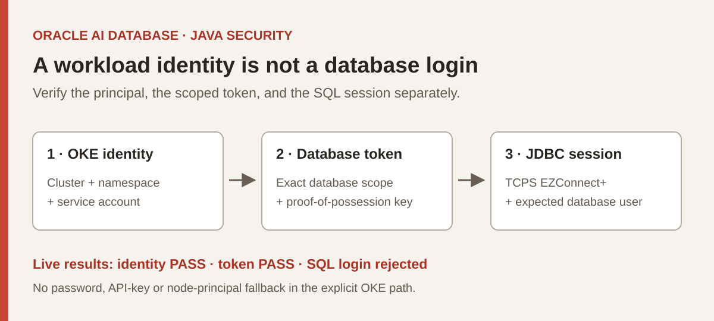

Testing OKE Workload Identity for Oracle Database JDBC Authentication
A Java test harness that separates pod identity, database-token issuance and a verified SQL session.

Key Takeaways
- A real OKE pod acquires its workload identity and a financialdb-scoped token; a different service account is denied.
- The explicit OKE path works through token acquisition; the unchanged JDBC resource-principal setting fails in this pod.
- A database token is only an intermediate result. Success requires a fresh JDBC session with the expected database identity.
- No password, local API key or node-principal fallback is used to turn a failed workload test into an apparent success.
Can an OKE Java pod connect without an application password?
The pod can obtain its workload identity and a database-scoped token without an application password. We verified both on the existing enhanced OKE cluster against financialdb. However, the subsequent JDBC login was rejected with ORA-01017, so this is not yet a successful end-to-end database integration.
The distinction matters: obtaining a workload signing identity, receiving an OCI database token and opening an authorized database session are different boundaries. Our harness reports them separately and stops on failure. See the dated evaluation status for the latest observed results.
Two paths answer two different questions
The explicit path constructs OkeWorkloadIdentityAuthenticationDetailsProvider. A scoped identity-dataplane request then attempts to obtain a database proof-of-possession token using a freshly generated RSA key. JDBC receives that token through a token supplier and connects with TCPS EZConnect+.
The comparison path sets oracle.jdbc.tokenAuthentication=OCI_RESOURCE_PRINCIPAL. In this tested pod, it fails with ORA-18726; the sanitized cause identifies missing OCI_RESOURCE_PRINCIPAL_VERSION. The generic resource-principal builder selected by provider 1.1.0 did not automatically use the OKE identity. This result describes the tested versions and environment, not every possible future release. Reviewed provider source; provider error reference.
| Mode | What a success establishes |
|---|---|
identity | The explicit OKE provider acquired a signing identity. |
token | The scoped request returned a parseable database token. |
jdbc | A new physical connection returned the expected session user, authentication metadata and database timestamp. |
native-resource-principal | The existing JDBC setting's result, independently of the custom OKE path. |
Database IAM authorization and user mapping are separate administrative concerns. An accepted policy is not proof that this workload principal can be mapped into a database session. Database IAM user mappings.
Build first, then validate the cloud boundaries
The implementation pins JDBC 23.26.3.0.0, OCI Java SDK 3.97.2 and JDBC OCI provider 1.1.0. These are the evaluation's dependency versions, not a claimed minimum-version support matrix.
cd workload-identity-oke
mvn -B -ntp verify
node --test scripts/*.test.cjsThe current offline run passes 18 Java tests and 15 manifest-generator tests. They exercise configuration validation, credential exclusion, TLS URL requirements, token-copy handling, optional read-only wallet mounts, isolated service accounts, immutable source/image references and bounded execution. They do not contact a database.
- Confirm the operator identity, exact enhanced cluster and target database. Preserve existing workloads and identity settings.
- Approve the isolated namespace, service accounts, image registry and narrowly scoped test policy. Resolve the documented database mapping before claiming readiness.
- Run the explicit identity, token and JDBC modes in sequence. Capture sanitized stage outcomes and correlate the workload in service-side evidence.
- Repeat with the separate denied service account. A failed negative test is meaningful only alongside a successful positive control.
- Run the native-provider comparison and, after a first login succeeds, test renewal across fresh physical connections.
The README contains the commands and configuration template; the operations guide covers failure triage and reviewed cleanup.
Observed live results
| Test | Observed result on October 8 |
|---|---|
| Allowed service account | OKE identity PASS; financialdb-scoped token PASS. |
| Denied service account | OKE identity PASS; database-token request rejected with HTTP 404 NotAuthorizedOrNotFound. |
| Approved database mapping | OKE_JDBC_DEMO is GLOBAL/OPEN, mapped to the verified workload OCID, with CREATE SESSION only. |
| Local ADMIN/password + wallet | PASS using the repository-root private configuration and selected wallet over TCPS EZConnect+ on port 1522; this is not an OKE-token login. |
| Explicit OKE + JDBC | Token acquisition succeeds; post-mapping SQL login still rejected with ORA-01017. |
| Unchanged resource-principal setting | Provider acquisition fails: ORA-18726; missing OCI_RESOURCE_PRINCIPAL_VERSION. |
These runs used a digest-pinned public Maven image and an immutable source ConfigMap in the dedicated namespace. The source-build option avoids local Docker and registry credentials, but downloads dependencies at test time; use a controlled prebuilt application image for production-style deployment.
What the harness keeps out of the deployment
The explicit path has no password, API-key or instance-principal fallback. Jobs use a dedicated service account, non-root execution, a read-only root filesystem, resource limits and a deadline. The image contains neither a wallet nor a local OCI configuration. An optional mTLS test can mount a certificate wallet read-only from a separately approved Kubernetes Secret; it must not include the ADMIN password. Wallet-mounted OKE testing has not yet run. SQL only reads session metadata from DUAL; it does not change application data.
Logs contain stage outcomes and sanitized error codes, not raw tokens, private keys or full identity claims. A token acquisition counter helps distinguish a fresh database token from reuse. Passing a long-running test requires observing renewal, not merely leaving an existing SQL session open.
Administrative provisioning and registry access are separate credential domains. Removing an application-managed database password does not mean that every aspect of deployment is credential-free.
What remains to be proved
The cloud policy has been exercised with matching positive and negative controls. After the operator corrected the password and wallet, ADMIN access worked over wallet-free TCPS EZConnect+. With explicit approval, we created OKE_JDBC_DEMO mapped to the verified workload subject and granted only CREATE SESSION. Read-back confirmed GLOBAL authentication, an OPEN account, no admin option, no direct role or object grants, and preservation of the existing user and identity-provider configuration.
The post-mapping JDBC test still returns ORA-01017. A fresh token matches the mapped workload subject, is unexpired, and contains the intended database and compartment scope. A synthetic regression verifies that clearing the original token character array does not destroy the driver's copy. These checks narrow the investigation but do not establish why the database rejects the token. No extra privileges, password reset or database restart were attempted; renewal remains untested until a workload SQL session succeeds.
A separate local test using the repository-root private configuration and the operator's selected wallet succeeds as ADMIN with password authentication. We found a URL alias absent from that wallet and replaced it locally with the wallet's verified endpoint in TCPS EZConnect+ format. The wallet connection reaches the same database. This resolves the local configuration mismatch, but does not establish that an OKE token can open a SQL session. Exporting the sensitive wallet into a test pod requires separate destination-specific approval.
An Oracle A-Team example describes using the workload token subject for a direct database mapping. Its dynamic-group instructions conflict with the current OKE guide, so we did not adopt those instructions. We captured only the workload subject privately for the administrator; no token or key is published. Oracle A-Team example.
A stale local Kubernetes context was also found during discovery. A separate kubeconfig reached the current cluster and its two Ready nodes. This was an access-configuration problem, not evidence of a current cluster outage. The status log preserves that distinction for the next operator.
FAQ
Is this a working, production-supported OKE-to-database integration?
Not yet. Live pod identity, scoped token issuance and the denied-account control pass. The approved workload user now exists with only CREATE SESSION, but the post-mapping SQL login is still rejected. That rejection needs resolution; renewal has not been tested.
Can I give JDBC the Kubernetes service-account token directly?
That is not what this implementation does. It uses the OKE signing identity to request a separate database-scoped token and supplies the database token and its proof-of-possession key to JDBC.
Does the normal resource-principal setting avoid custom Java code?
Not in the unchanged configuration we tested: it fails during resource-provider acquisition. The explicit OKE implementation reaches database-token issuance, but a successful SQL session remains unproved even after creating the approved mapping.
Where should I look when revisiting the project?
Start with STATUS.md, then the README, operations guide and source and decision record. They distinguish observed results from unresolved prerequisites.